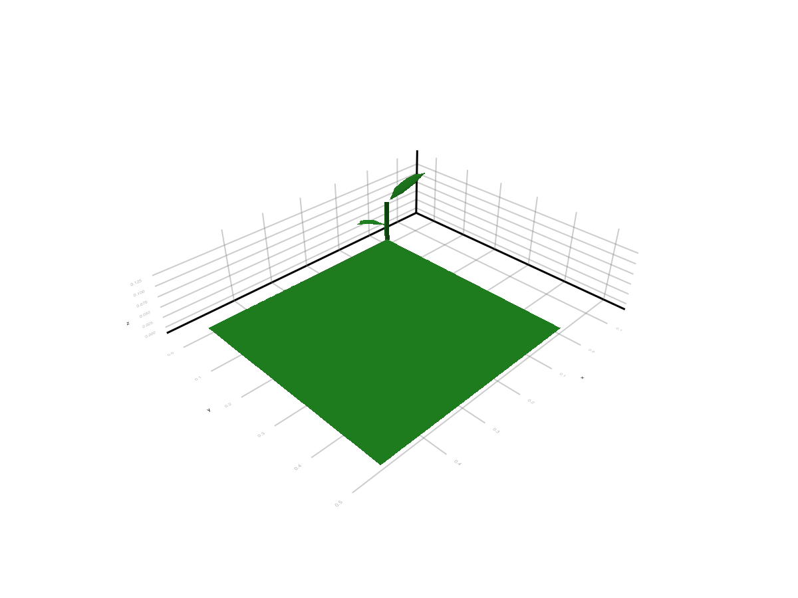
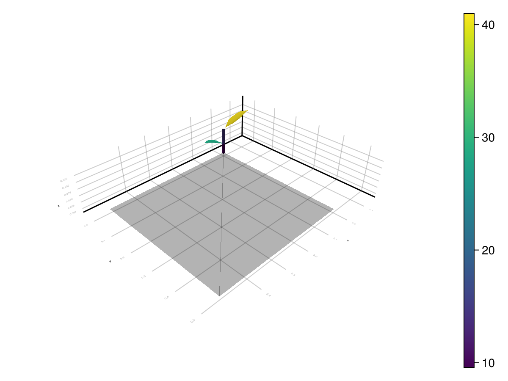

Outputs
The current Julia package exposes light results in three increasingly concrete forms:
- in memory as
LightBudget - attached back onto MTG nodes as ARCHIMED-style attributes
- written to disk when you export the enriched scene
This page documents those three layers and then explains the ARCHIMED-style CSV outputs used by the public writer and regression harness.
1. In-Memory Outputs: LightBudget
The core output of run_light for one meteo row is:
using ArchimedLight
repo_root = normpath(joinpath(dirname(pathof(ArchimedLight)), ".."))
config = joinpath(repo_root, "example_2", "config.yml")
sim, meteo = read_simulation(config)
sky_options = LightOptions(sim.options; include_sky_fraction=true)
sim = LightSimulation(sim.scene, sim.models; options=sky_options)
row = first(meteo)
step = run_light(sim, row)
budget = step.budget;LightBudget(ArchimedLight.InitialTotalSpectralNodeValues(ArchimedLight.SpectralNodeValues(Dict(3988 => 299.08621457962295, 601 => 171.03723033548343, 1356 => 40.02751007963264, 4651 => 383.10399150371745, 3233 => 280.9720537332843, 960 => 157.8256536193325, 2874 => 101.28069671033809, 205 => 202.78229590430396, 5010 => 399.18121206543594, 5406 => 416.55801483125447…), Dict(3988 => 324.0100657945915, 601 => 185.29033286344048, 1356 => 43.363135919602016, 4651 => 415.0293241290272, 3233 => 304.38639154439153, 960 => 170.97779142094367, 2874 => 109.72075476953292, 205 => 219.68082056299616, 5010 => 432.44631307088906, 5406 => 451.2711827338591…)), ArchimedLight.SpectralNodeValues(Dict(3988 => 322.55978047714353, 601 => 193.45308930454684, 1356 => 56.270560987614, 4651 => 389.9745994949431, 3233 => 304.0284900008393, 960 => 179.56695778027475, 2874 => 120.10477333483857, 205 => 228.73893968861196, 5010 => 403.37207916601585, 5406 => 421.7984444127454…), Dict(3988 => 636.3970164548197, 601 => 636.270440350407, 1356 => 367.0398602592081, 4651 => 539.7985692941626, 3233 => 638.9070441665897, 960 => 502.38568521085324, 2874 => 446.92557844793646, 205 => 589.2305979968374, 5010 => 514.501095202714, 5406 => 550.8195959240273…))), ArchimedLight.InitialTotalSpectralNodeValues(ArchimedLight.SpectralNodeValues(Dict(3988 => 96.22441184915279, 601 => 25.660720821590154, 1356 => 213.05217782878668, 4651 => 1424.766995473589, 3233 => 2391.064292216824, 960 => 841.6021304967137, 2874 => 539.0810755302097, 205 => 1231.7255508126143, 5010 => 1484.557341823474, 5406 => 1549.1797449555618…), Dict(3988 => 104.24311283658218, 601 => 27.79911422338935, 1356 => 230.80652598118553, 4651 => 1543.4975784297214, 3233 => 2590.3196499015608, 960 => 911.7356413714405, 2874 => 584.0044984910603, 205 => 1334.3693467136668, 5010 => 1608.2704536420972, 5406 => 1678.2780570351922…)), ArchimedLight.SpectralNodeValues(Dict(3988 => 103.77651543127868, 601 => 29.02377281824039, 1356 => 299.5081518237856, 4651 => 1450.3188448978476, 3233 => 2587.273917809894, 960 => 957.5371986052152, 2874 => 639.2749308471921, 205 => 1389.3895185662955, 5010 => 1500.1432019158885, 5406 => 1568.668908705779…), Dict(3988 => 204.74674400152966, 601 => 95.45967334034165, 1356 => 1953.6224317382148, 4651 => 2007.515460007216, 3233 => 5437.0810159030425, 960 => 2678.961583927915, 2874 => 2378.8256729782365, 205 => 3579.0618684769343, 5010 => 1913.4326846379736, 5406 => 2048.4987222626964…))), ArchimedLight.InitialTotalSpectralNodeValues(ArchimedLight.SpectralNodeValues(Dict(3988 => 254.2232823926795, 601 => 145.3816457851609, 1356 => 34.023383567687745, 4651 => 325.6383927781598, 3233 => 238.82624567329168, 960 => 134.15180557643262, 2874 => 86.08859220378737, 205 => 172.36495151865836, 5010 => 339.30403025562055, 5406 => 354.0743126065663…), Dict(3988 => 32.40100657945914, 601 => 18.529033286344045, 1356 => 4.3363135919602005, 4651 => 41.50293241290271, 3233 => 30.438639154439144, 960 => 17.097779142094364, 2874 => 10.97207547695329, 205 => 21.96808205629961, 5010 => 43.244631307088895, 5406 => 45.1271182733859…)), ArchimedLight.SpectralNodeValues(Dict(3988 => 274.175813405572, 601 => 164.43512590886482, 1356 => 47.8299768394719, 4651 => 331.4784095707016, 3233 => 258.42421650071344, 960 => 152.63191411323353, 2874 => 102.08905733461278, 205 => 194.42809873532016, 5010 => 342.86626729111345, 5406 => 358.5286777508336…), Dict(3988 => 63.63970164548195, 601 => 63.62704403504068, 1356 => 36.703986025920806, 4651 => 53.97985692941624, 3233 => 63.890704416658956, 960 => 50.23856852108531, 2874 => 44.69255784479363, 205 => 58.923059799683735, 5010 => 51.4501095202714, 5406 => 55.08195959240272…))), ArchimedLight.InitialTotalSpectralNodeValues(ArchimedLight.SpectralNodeValues(Dict(3988 => 81.79075007177988, 601 => 21.81161269835163, 1356 => 181.09435115446868, 4651 => 1211.0519461525507, 3233 => 2032.4046483843003, 960 => 715.3618109222067, 2874 => 458.2189142006781, 205 => 1046.966718190722, 5010 => 1261.8737405499528, 5406 => 1316.8027832122275…), Dict(3988 => 10.424311283658218, 601 => 2.7799114223389343, 1356 => 23.080652598118547, 4651 => 154.3497578429721, 3233 => 259.031964990156, 960 => 91.17356413714403, 2874 => 58.400449849106025, 205 => 133.43693467136666, 5010 => 160.82704536420968, 5406 => 167.8278057035192…)), ArchimedLight.SpectralNodeValues(Dict(3988 => 88.21003811658689, 601 => 24.67020689550433, 1356 => 254.5819290502178, 4651 => 1232.7710181631703, 3233 => 2199.18283013841, 960 => 813.9066188144328, 2874 => 543.3836912201133, 205 => 1180.981090781351, 5010 => 1275.1217216285052, 5406 => 1333.368572399912…), Dict(3988 => 20.474674400152963, 601 => 9.545967334034163, 1356 => 195.36224317382144, 4651 => 200.75154600072156, 3233 => 543.7081015903042, 960 => 267.89615839279145, 2874 => 237.88256729782364, 205 => 357.90618684769333, 5010 => 191.34326846379733, 5406 => 204.8498722262696…))), Dict{String, Dict{Int64, Float64}}(), Dict{String, Dict{Int64, Float64}}(), Dict("PAR" => Dict(), "NIR" => Dict()))The main grouped fields are:
budget.incident_fluxbudget.incident_energybudget.absorbed_fluxbudget.absorbed_energy
Each one is then split into:
initial: first-order interception onlytotal: first-order plus scattering
and by waveband, for example:
parnir
Typical accesses:
budget.incident_flux.initial.par;
budget.incident_flux.total.par;
budget.absorbed_energy.total.nir;Dict{Int64, Float64} with 5968 entries:
3988 => 20.4747
601 => 9.54597
1356 => 195.362
4651 => 200.752
3233 => 543.708
960 => 267.896
2874 => 237.883
205 => 357.906
5010 => 191.343
5406 => 204.85
2478 => 38.1536
2082 => 359.809
5369 => 199.293
5802 => 205.098
564 => 35.6299
2837 => 28.9069
4255 => 145.444
3629 => 30.6496
3196 => 61.5067
⋮ => ⋮Each leaf of that structure is a dictionary keyed by node id.
For artificial emitters, step.first_order.emitter_escaped_power.par and .nir report emitted power which left the represented scene without a geometric hit. These dictionaries are keyed by emitting source node. Together with emitter-contributed incident power, they provide the explicit received-plus-escaped power closure (in W) described in Artificial Light Emitters. Virtual sensors are non-consuming observations: their reported incident power is not subtracted from the ray and is excluded from this physical received-plus-escaped closure. A sensor may therefore report the same ray that is subsequently received by a physical component or escapes the scene. first_order.incident_power combines artificial emitters with sky and sun sources. To verify the closure from public fields, external sky/sun input must be zero and incident power must be summed over physical (non-sensor) receivers; sensor entries are observations, not consumed power. The emitter transfer is accounted separately before it is merged into total incident power. emitter_escaped_power exposes instantaneous PAR and NIR power. The integrated step budget exposes every emitted band, including custom bands, through step.budget.emitter_escaped_energy_per_band[band]. For PAR and NIR this is the corresponding escaped power multiplied by the step duration in seconds.
If you need canopy-view metadata for coupled models, step.sky_fraction stores the per-node visible-sky fraction when options.include_sky_fraction=true. When using a YAML config, read_options enables that option when component_variables.sky_fraction or opf_variables.sky_fraction is true.
2. Query Values By Scene Metadata
light_metric_values combines a light result with its scene metadata and returns a Tables.jl-compatible column table:
coffee_leaves = light_metric_values(
sim,
step,
:absorbed_par_energy;
species="coffee",
object_id=1,
symbol=:Leaf,
)
propertynames(coffee_leaves)(:step_number, :node_id, :source_topology_id, :object_id, :item_id, :component_id, :group, :type, :symbol, :scale, :value)The table includes the timestep, runtime and source node identifiers, object and output grouping identifiers, group/type, MTG symbol and scale, and the selected value. A series produces the same columns in long form:
coffee_series = light_metric_values(
sim,
[step],
:Ra_PAR_q;
species="coffee",
)
unique(coffee_series.step_number)1-element Vector{Int64}:
1All filters combine. group and species are aliases, object_id identifies one placed scene object, source_topology_id identifies its source component, and node_ids accepts one runtime node id or a collection. symbol, scale, type, exact attributes, and a custom where node predicate provide progressively more specific selection.
Selections can be reused:
leaf_ids = light_node_ids(sim; species="coffee", symbol=:Leaf)
leaf_par = light_metric_values(sim, step, :Ra_PAR_q; node_ids=leaf_ids)
leaf_nir = light_metric_values(sim, step, :Ra_NIR_q; node_ids=leaf_ids)
length(leaf_par.value) == length(leaf_nir.value)trueUse reduce=sum for a total. For example, these compute the whole-scene absorbed PAR and the plant-only total after excluding paving:
scene_absorbed_par = light_metric_values(
sim,
step,
:absorbed_par_energy;
reduce=sum,
)
plant_ids = setdiff(
light_node_ids(sim),
light_node_ids(sim; group="pavement"),
)
plant_absorbed_par = light_metric_values(
sim,
step,
:absorbed_par_energy;
node_ids=plant_ids,
reduce=sum,
)
scene_absorbed_par >= plant_absorbed_partrueAdding by, such as by=:object_id or by=(:group, :type), returns a grouped table. For a series, step_number is retained automatically. sink=DataFrame can materialize detailed or grouped results when DataFrames.jl is loaded.
Summing per-component energy (*_energy or historical *_q) gives an energy total. Flux values are normalized independently by each component's area, so their direct sum generally is not a meaningful scene-scale flux.
Dynamic scenes
Each result retains a lightweight node metadata snapshot by default. All steps computed without changing the scene share the same snapshot. After update_scene!, the next result receives a new snapshot, allowing one series to contain several runtime node-id layouts safely:
steps = LightStepResult[]
for (new_scene, row) in zip(scenes, meteo)
update_scene!(sim, new_scene)
push!(steps, run_light(sim, row))
end
second_coffee_leaf = light_metric_values(
sim,
steps,
:absorbed_par_energy;
species="coffee",
object_id=2,
source_topology_id=42,
)The stable component identity is normally (object_id, source_topology_id); runtime node_id remains local to one scene version. To retain additional scalar identifiers, construct options with node_metadata_attributes=(:organ_id, ...) and filter with attributes=(organ_id=...,). Set store_node_metadata=false when results are queried immediately and minimum retained memory is more important.
3. Attached Outputs: ARCHIMED Attribute Names
The convenience layer for visual inspection is attach_light_step!:
attach_light_step!(
sim.scene,
step;
fields=[:incident_par_flux, :incident_par_energy, :absorbed_par_energy],
);/ 1: Scene
├─ / 2: Individual
│ └─ / 3: Axis
│ ├─ / 4: Metamer
│ ├─ < 5: Metamer
│ ├─ < 6: Metamer
│ ├─ < 7: Metamer
│ ├─ < 8: Metamer
│ ├─ < 9: Metamer
│ ├─ < 10: Metamer
│ ├─ < 11: Metamer
│ │ ├─ + 12: Axis
│ │ │ ├─ / 13: Metamer
│ │ │ ├─ < 14: Metamer
│ │ │ ├─ < 15: Metamer
│ │ │ ├─ < 16: Metamer
│ │ │ ├─ < 17: Metamer
│ │ │ ├─ < 18: Metamer
│ │ │ ├─ < 19: Metamer
│ │ │ │ └─ + 20: Axis
│ │ │ │ ├─ / 21: Metamer
│ │ │ │ ├─ < 22: Metamer
│ │ │ │ ├─ < 23: Metamer
│ │ │ │ ├─ < 24: Metamer
…The default mappings are:
| Field selector | Attached attribute |
|---|---|
:area | area |
:incident_par_initial_flux | Ri_PAR_0_f |
:incident_nir_initial_flux | Ri_NIR_0_f |
:incident_par_flux | Ri_PAR_f |
:incident_nir_flux | Ri_NIR_f |
:incident_par_initial_energy | Ri_PAR_0_q |
:incident_nir_initial_energy | Ri_NIR_0_q |
:incident_par_energy | Ri_PAR_q |
:incident_nir_energy | Ri_NIR_q |
:absorbed_par_initial_flux | Ra_PAR_0_f |
:absorbed_nir_initial_flux | Ra_NIR_0_f |
:absorbed_par_flux | Ra_PAR_f |
:absorbed_nir_flux | Ra_NIR_f |
:absorbed_shortwave_flux | Ra_SW_f (Ra_PAR_f + Ra_NIR_f) |
:absorbed_par_initial_energy | Ra_PAR_0_q |
:absorbed_nir_initial_energy | Ra_NIR_0_q |
:absorbed_par_energy | Ra_PAR_q |
:absorbed_nir_energy | Ra_NIR_q |
:sky_fraction | sky_fraction |
The meaning follows the historical ARCHIMED naming:
area: prepared object surface area inm^2Ri: intercepted radiationRa: absorbed radiation_0_: first-order only- no
_0_: after scattering has been added _f: irradiance-like quantity inW m^-2_q: energy per component and per step inJ
Shortwave radiation is the sum of its PAR and NIR wavebands. In particular, Ra_SW_f is not an alias for Ra_NIR_f. The typed component and source-owner tables derive it as
\[Ra\_SW\_f = Ra\_PAR\_f + Ra\_NIR\_f.\]
The table also derives aPPFD from absorbed PAR using the requested PAR-energy-to-photon conversion factor:
owner_light = component_values(step; level=:source_owner)
all(isapprox.(
owner_light.Ra_SW_f,
owner_light.Ra_PAR_f .+ owner_light.Ra_NIR_f,
))trueIf a downstream package reads attributes attached to the scene, attach the PAR and NIR values under distinct names. Request :absorbed_shortwave_flux to attach their sum as Ra_SW_f. The historical Dict(:absorbed_nir_flux => :Ra_SW_f) mapping remains accepted and now produces the same PAR+NIR sum, with a deprecation warning.
4. Disk Outputs: Exported Scenes
Once results are attached, you can export the enriched scene:
scene_path = joinpath(mktempdir(), "scene_with_light.opf")
write_scene(scene_path, sim.scene)
isfile(scene_path)trueSupported export formats are:
.ops.opf.gwa
The export path determines the format.
This is currently the main disk output mechanism of ArchimedLight.jl: attach node attributes, then write the scene back out.
Example Output Images


ARCHIMED-Style CSV Tables
The public writer produces component_values.csv. Historical fixture datasets and internal regression tools may also contain files such as:
component_values.csvscene_values.csvsummary.csv
The example writes a fresh component_values.csv on demand, while the regression and release harnesses under test/ keep their own isolated reference data.
component_values.csv
Component-scale outputs, typically one row per scene node and step. Common columns are:
step_numberobject_idsource_topology_idgrouptypeareaRi_*Ra_*
You can write this table from already-computed results:
series = run_light(sim, meteo)
component_path = joinpath(mktempdir(), "component_values.csv")
write_component_values(component_path, sim, series)
isfile(component_path)truestep_index_base=0 is available for compatibility with historical harness outputs.
scene_values.csv
Scene-scale summary per meteo step.
summary.csv
Grouped aggregation, usually by item, group, and type.
Which Output Form Should You Use
- use
LightBudgetwhen staying inside Julia - use
attach_light_step!when you want visual inspection or downstream scene export - use
component_values.csvwhen you need a portable component-scale table